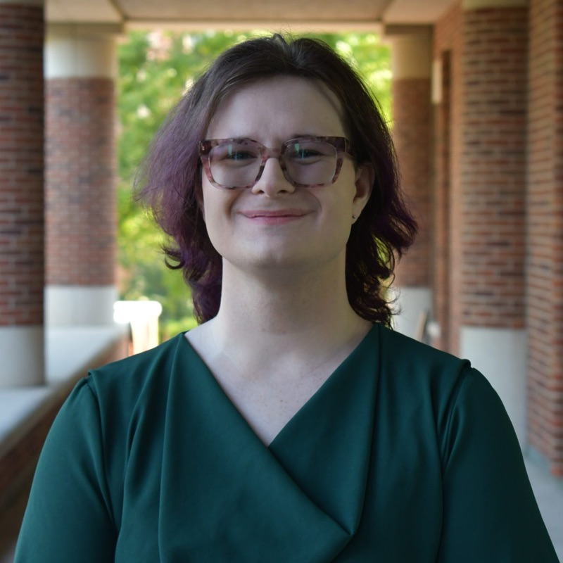

Law library professional
A law librarian in training. I combine a J.D. with reference-service leadership and technical skill, with a focus on legal research.

I am a Graduate Professional Assistant at the University of Missouri School of Law Library. I earned my J.D. in 2026 and am pursuing a Master of Library and Information Science, expected in May 2028. I lead a team of six reference assistants and support pro se patrons, students, faculty, and practicing attorneys with their research.
My background combines library science, substantive legal knowledge, and technical workflow skills. I have clerked in civil litigation, worked as a summer associate, and served as an editor of the Journal of Dispute Resolution. My undergraduate degree is in religious studies.
University of Missouri School of Law Library · Columbia, MO
Lead and train six reference assistants in desk procedures, inquiry triage, and advanced research support. Assist pro se patrons, students, faculty, and attorneys with Westlaw Public, digital databases, and print resources. Developed and published an Employment & Labor Law LibGuide for self-represented litigants, practitioners, and scholars. Curate displays of faculty publications and institutional scholarship.
University of Missouri School of Law · Columbia, MO
Researched and vetted prospective senior faculty candidates at peer institutions by evaluating publication records, citation metrics, and scholarly profiles. Compiled the findings in Excel for the Faculty Appointments Committee.
TGH Litigation · Columbia, MO
Drafted oppositions to motions to dismiss and legal memoranda in civil litigation, and reviewed documents and facts in employment discrimination and whistleblower retaliation matters.
University of Missouri School of Law · Columbia, MO
Verified citations and sources for Government-Backed Insurance for Artificial Intelligence Technologies, 41 Ga. St. U. L. Rev. 559 (2025). Supported the 1L Lawyering course by managing records, holding office hours, and drafting study materials.
Spencer Fane LLP · Springfield, MO
Drafted client memoranda on grant administrative appeals and banking compliance, plus bankruptcy, estate planning, and probate documents.
Nothing here yet. Check back soon.
Items marked AI-assisted were built with Claude Code. Each item describes how.